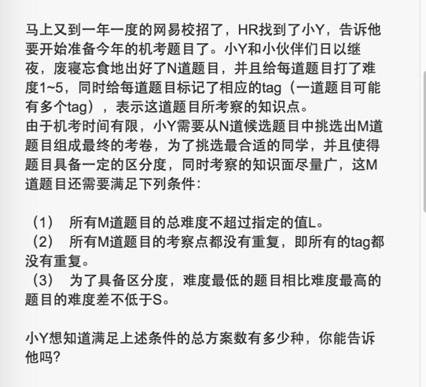
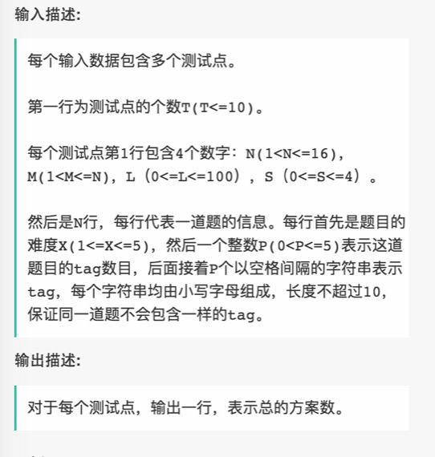
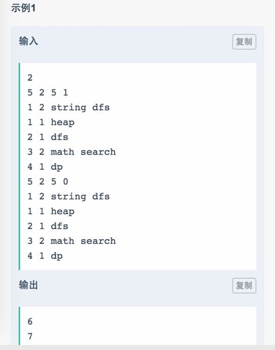

☰ 目录
014 找出满足一定条件的机考题目
链接和考点
| 栏目 |
详细 |
| 网易互娱编程测试 |
2018.09.08 |
| 考点 |
dfs, struct |
| 难度 |
Hard |
题意



分析
1- 会让选M道题目，那就先选，然后按照条件剪枝， 和阿里的那道题目很像。
测试
A了100%。
参考答案
//#include "GlobalHead.h"
#include <iostream>
#include <vector>
#include <map>
#include <stack>
#include <algorithm>
#include <unordered_map>
#include <sstream>
using namespace std;
struct Node{
int nandu;
int tags_num;
unordered_map<string, string> tags;
};
bool Cmp(const Node &a, const Node &b) //const必须加，不然会错，目前不懂为啥。当return的是ture时，a先输出，所以示例中是升序
{
return a.nandu < b.nandu;
}
bool check_tags_andNandu(vector<Node> path, int L){
bool flag = true;
bool flag_nandusum = true;
unordered_map<string, string> tmp;
int cnt = 0;
int sum_nandu = 0;
for( int i=0; i< path.size(); i++ ){
Node& me = path[i];
sum_nandu += me.nandu;
if( sum_nandu >L ){
flag_nandusum = false;
return false;
}
for( auto it = me.tags.begin(); it != me.tags.end(); it++ ){
tmp[it->first] = it->second; // 将所有标签添加进来
cnt++;
}
}
if( cnt != tmp.size() )
flag = false;
return flag;
}
bool check_abs(vector<Node> path, int S){
sort(path.begin(), path.end(), Cmp);
if( path.size() == 0 )
return true;
int tt = abs(path[0].nandu-path[path.size()-1].nandu);
return tt>= S;
}
void process(vector<Node>& timu, int start, vector<Node>& path, int& count, int M, int L, int S){
if( path.size() == M ){
if(! check_tags_andNandu(path, L))
return;
if(! check_abs(path, S))
return;
count++; // 种类数
return;
}
for( int i = start; i < timu.size(); i++){
path.push_back(timu[i]);
process(timu, i+1, path, count, M, L, S);
path.pop_back();
}
}
int main() {
int test;
cin >> test;
vector<int> res;
//
for( int kk=0; kk < test; kk++ ){
int N, M, L, S;
cin >> N;
cin >> M;
cin >> L;
cin >> S;
vector<Node> timu;
for( int i=0; i< N; i++ ){
Node tmp;
cin >> tmp.nandu;
cin >> tmp.tags_num;
for( int j=0; j< tmp.tags_num; j++ ){
string tt;
cin >> tt;
tmp.tags[tt] = tt;
}
timu.push_back(tmp);
}
vector<Node> path;
int count = 0;
int start = 0;
process(timu, start, path, count, M, L, S);
// res.push_back(count);
cout << count << endl;
}
return 0;
}
吴登鹏写的python答案，据说通过了样例，未测试：
import sys
def dfs(h, m, l, s, d, res, out, pos, zong_nandu, max_nandu, min_nandu):
if len(out) == m and zong_nandu <= l and max_nandu - min_nandu >= s:
res[0] += 1
return
for i in range(pos, len(h)):
if len(out) < m and zong_nandu < l:
for tag in h[i][1]:
if tag in d:
return
else:
d.add(tag)
out.append(h[i])
max_nandu = max(max_nandu, h[i][0])
min_nandu = min(min_nandu, h[i][0])
dfs(h, m, l, s, d, res, out, pos + 1, zong_nandu, max_nandu, min_nandu)
for k in out[-1][-1]:
d.remove(k)
out.pop()
else:
return
if __name__ == '__main__':
t = int(sys.stdin.readline().strip())
for i in range(t):
n,m,l,s = map(int, sys.stdin.readline().strip().split())
h = []
for j in range(n):
tmp = sys.stdin.readline().strip().split()
h.append((int(tmp[0]), tmp[2:]))
d = set()
res = [0]
out = []
dfs(h, m, l, s, d, res, out, 0, 0, 0, 6)
print res[0]